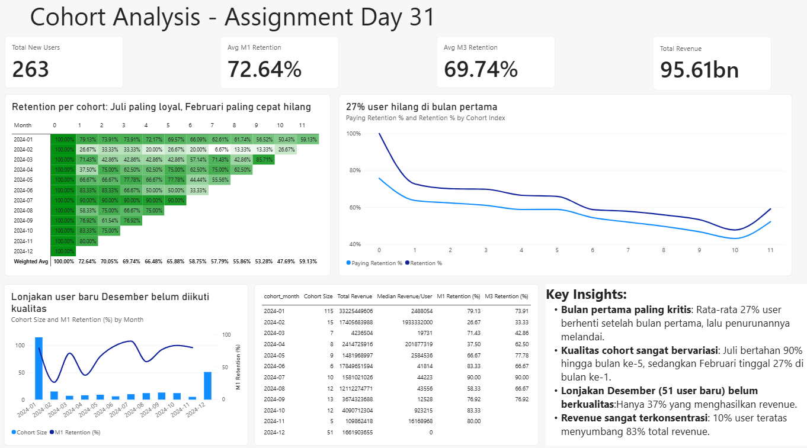

Ringkasan
- Hanya 28,3% leads education startup yang akhirnya menjadi user terdaftar.
- Kebocoran terbesar terjadi setelah free trial: 53% peserta KG & Elementary dan 51% peserta High School tidak mendaftar.
- 27% user fintech berhenti bertransaksi setelah bulan pertama, dan 10% user teratas menyumbang 83% revenue.
Funnel analysis: education startup
Data berisi jumlah calon siswa di empat tahap (Leads, Bookings, Free Trials, Register) untuk tiga segmen: KG & Elementary, Middle School, dan High School. Untuk tiap tahap dan segmen saya menghitung conversion dari tahap sebelumnya, conversion dari leads, dan drop-off rate.

Temuan
- Dari 630.338 leads, hanya 178.560 yang register (28,3%).
- Drop-off Free Trial ke Register mencapai 53,4% di KG & Elementary dan 51,4% di High School, sedangkan Middle School hanya 16,5%.
- Middle School menyumbang sekitar 70% registrasi dengan conversion trial ke register 83,5%, sehingga bisa dijadikan benchmark.
- High School paling lemah secara keseluruhan: hanya 17,3% leads yang register.
Cohort analysis: fintech
Data berisi 22.466 transaksi dari 263 user sepanjang 2024. Cohort ditentukan dari bulan transaksi pertama, dan user dianggap aktif jika punya minimal satu transaksi di bulan tersebut. Retention dihitung sebagai weighted average karena ukuran cohort sangat beragam (5 sampai 115 user).

Temuan
- Retention rata-rata 72,6% di bulan ke-1, 69,7% di bulan ke-3, dan 58,8% di bulan ke-6. Penurunan terbesar terjadi di bulan pertama.
- Cohort Juli paling loyal (90% bertahan hingga bulan ke-5), sedangkan cohort Februari hanya 26,7% di bulan ke-1 dan hampir seluruh revenue-nya terjadi di bulan pertama.
- Cohort Desember adalah lonjakan user baru terbesar setelah Januari (51 user), tetapi hanya 37% yang menghasilkan revenue.
- Revenue sangat terkonsentrasi: 26 user teratas (10%) menyumbang 83,3% revenue.
Calculated field
Semua metrik dihitung di Python, lalu metrik utama dibuat ulang sebagai measure DAX agar dinamis terhadap filter slicer di dashboard.
| Metrik | Rumus |
|---|---|
| Conversion from previous | Count ÷ count tahap sebelumnya |
| Drop-off rate | 1 − conversion from previous |
| Retention rate | Σ user aktif ÷ Σ ukuran cohort |
| Paying retention | User berbayar ÷ ukuran cohort |
| Revenue per active user | Revenue ÷ user aktif |
Rekomendasi
- Perbaiki konversi free trial untuk KG dan High School. Libatkan orang tua di sesi trial KG, fokuskan materi trial High School pada persiapan ujian, dan lakukan follow-up 24–48 jam setelah trial. Jika konversi naik ke 60%, ada tambahan sekitar 13.300 user tanpa menambah leads.
- Program aktivasi 30 hari pertama di fintech. Onboarding fitur, pengingat transaksi, dan insentif transaksi kedua, dengan retention bulan ke-1 sebagai KPI utama.
- Ukur kualitas akuisisi, bukan hanya jumlah user. Nilai kampanye dari retention bulan ke-1 dan persentase user berbayar.
- Lindungi user bernilai tinggi. Beri benefit khusus dan peringatan dini saat aktivitas 10% user teratas menurun.